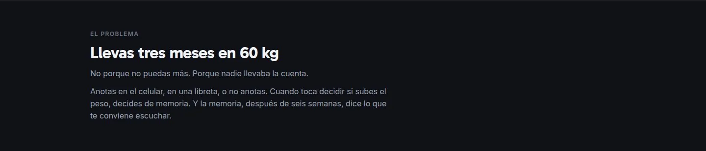
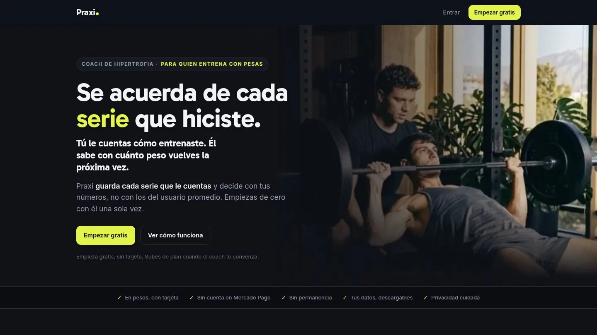
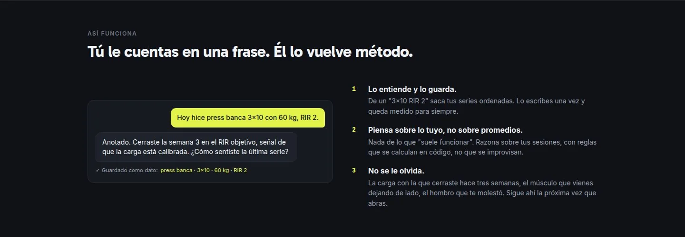
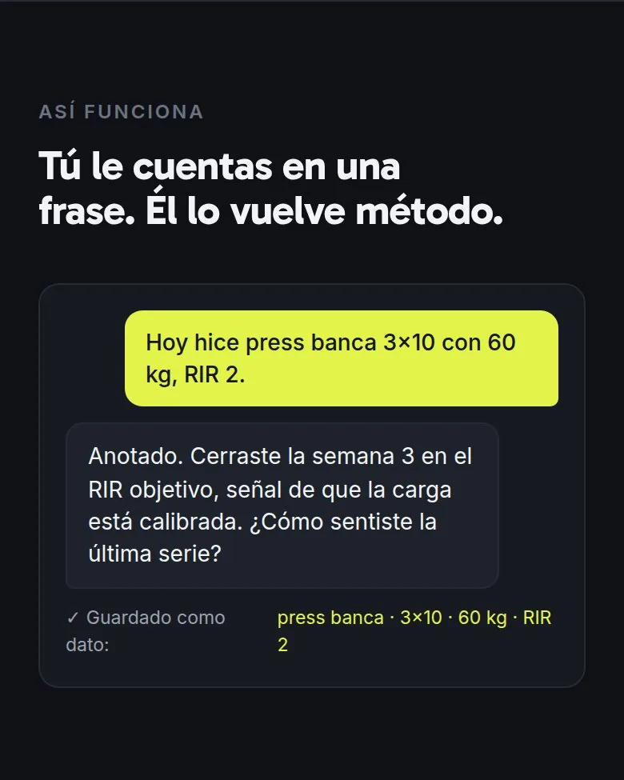
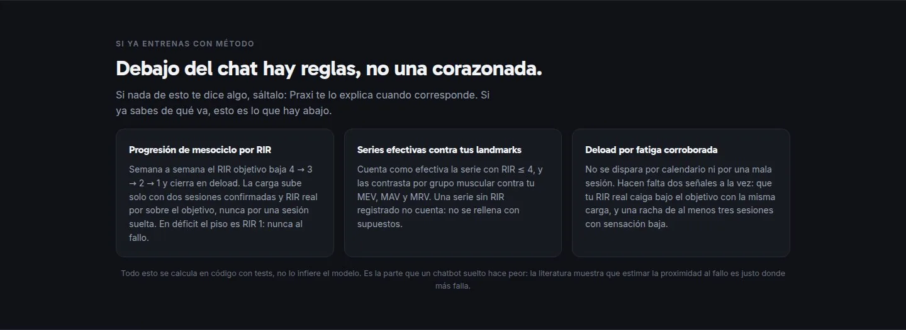
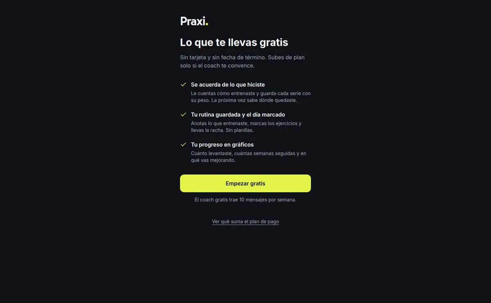
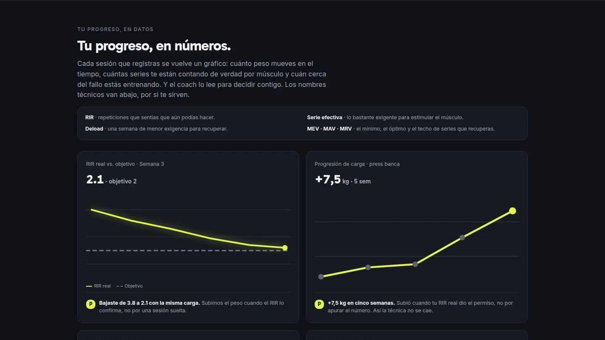
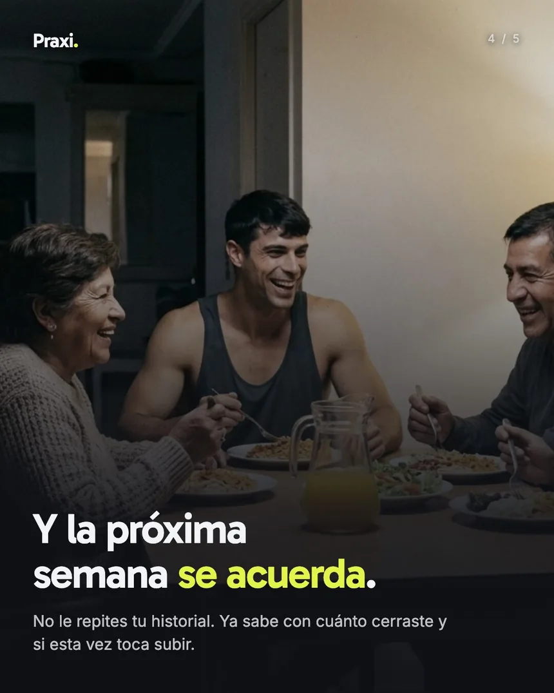
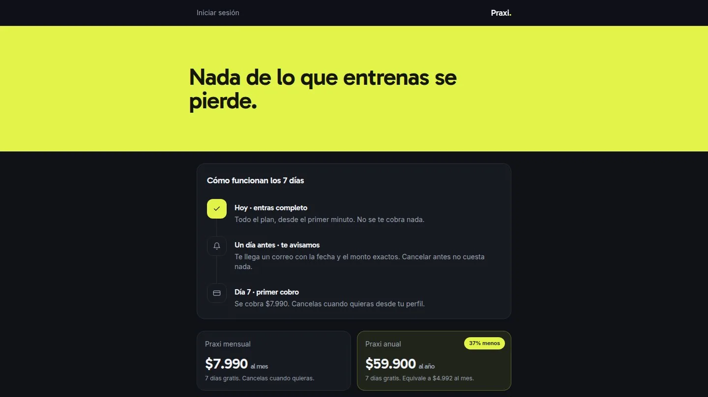

- Tipo
- Propio
- Año
- 2026
- Qué es
- Sitio y app
- Hecho
- 21-jul a 25-ago-2026
- Estado
- Fuera de línea
Problema
Las apps de entrenamiento olvidan lo que hiciste.
Quien entrena con pesas se hace la misma pregunta cada semana: si subir el peso o no. La respuesta depende de lo que hizo las semanas anteriores, y en las reseñas de las apps de entrenamiento la queja que más se repite es que no se acuerdan.
Praxi partió vendiendo otra cosa: un coach que te explica el porqué de cada decisión. Eso ChatGPT ya lo hace gratis, y lo hace bien. Había que ofrecer algo que un chat general no puede hacer.

Hipótesis
Vender la memoria, no la explicación.
Si Praxi se acuerda de cada serie, puede decirte cuándo subir el peso, y eso no lo hace un chat que no guarda lo que entrenaste. La portada pasó de «Entrena sabiendo por qué» a «Se acuerda de cada serie que hiciste», y las palabras técnicas del entrenamiento salieron de la portada, porque en Chile casi nadie las busca en Google.

Solución
El modelo conversa. El código decide.
A Praxi le escribes como a una persona: «hoy hice press banca, tres series de 10 con 60 kilos». La IA convierte esa frase en un registro ordenado y, si no está segura de que le contaste un entrenamiento, no guarda nada.
Las decisiones que importan no las toma el modelo. Cuándo subir el peso, cuándo hacer una semana más liviana para recuperarte y qué serie cuenta los calcula código, revisado por pruebas automáticas: programas que comprueban, cada vez que algo cambia, que cada regla siga dando lo mismo. El peso sube solo después de dos sesiones confirmadas, nunca por una suelta. El modelo recibe esas cuentas hechas y te las explica.
Con la salud pasa lo mismo. Si mencionas dolor, mareo o señales de un trastorno alimentario, el coach no diagnostica y te manda a un profesional, y esa regla también vive en el código. Tiene una razón: el 22 de agosto, probando con una cuenta de 16 años, el coach recomendó creatina aunque sus instrucciones se lo prohibían. Desde ese día, la edad se revisa en código y no se le deja al modelo.
Se paga con tarjeta sin salir de la app y sin cuenta en Mercado Pago. El número de la tarjeta lo reciben los campos de Mercado Pago y nunca pasa por el servidor de Praxi.
Con qué está hecho
El detalle, para quien quiera mostrárselo a su técnico.
- Le escribes como a una persona y queda registrado, sin formularios.API de Anthropic, solo en el servidor
- El peso sube con dos sesiones confirmadas, y la semana liviana llega por cansancio comprobado, no por calendario.Lógica de entrenamiento en código
- Si mencionas dolor o mareo, el coach no diagnostica y te deriva; a un menor no le recomienda suplementos.Reglas de salud y de edad en código
- Cada persona ve y borra solo lo suyo, y sus exámenes se guardan en un espacio privado.Supabase
- Pagas sin salir de Praxi, y la tarjeta no pasa por su servidor.Mercado Pago, dentro de la app
- Te llega por correo la fecha exacta del cobro, el monto y cómo cancelar.Resend
- Un color fuera de la paleta de la marca no llega al sitio: la publicación se detiene.Revisión de marca en cada publicación
- Google y los asistentes de IA pueden leer qué es Praxi, cuánto cuesta y qué responde.Datos estructurados
- Se instala en el teléfono y se abre a pantalla completa, como una app.



La pieza
Sitio, app y campaña, con una sola marca.
La marca de Praxi vive en dos archivos que el código hace cumplir: uno con los colores, la letra y las formas, y otro con cómo habla. Si alguien pone un color que no está ahí, el sitio no se publica. El color principal partió morado, el de casi cualquier demo de IA, y pasó al amarillo del punto del logo.
La campaña usa el mismo chat como pieza: un reel donde la conversación con el coach aparece sobre el video.
Faltan las pantallas de la app por dentro. Para verlas hace falta una cuenta y su base de datos, y no las vamos a armar con datos inventados.




Sin métrica
Lo que se midió, y lo que no.
No tenemos un número de usuarios, de uso ni de ventas de Praxi que podamos publicar, así que no ponemos ninguno. El 16 de octubre de 2026, sobre la última versión, pasaron las 384 pruebas automáticas, la revisión de marca pasó sus 8 reglas y el sitio se armó sin errores.
Hoy praxi.coach está fuera de línea, y por eso esta página no lo enlaza.
384 / 384vitest run · 35 archivos
8 / 8npm run design-check
exit 0tsc --noEmit
a360d7a · 2026-10-16T23:10:33Z
Si quieres una herramienta como Praxi para tu empresa, escríbenos y te respondemos en 24 horas.
Sirve fuera del gimnasio: cualquier cosa que alguien escribe en sus palabras y que después hay que registrar y calcular bien, como una solicitud o una cotización, se puede programar igual.